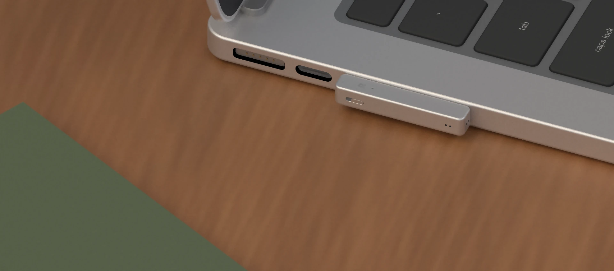
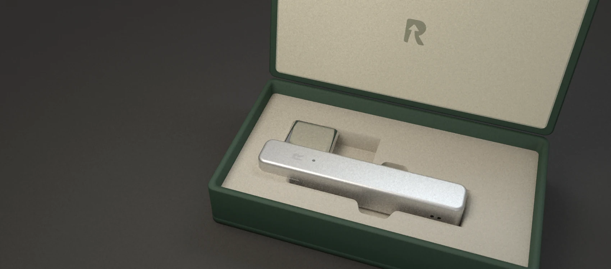

Rutta Bar
A microphone for
the side of your Mac.
Plug it in for the conversation. Slide the switch when you want to mute.

Rutta Bar
Plug it in for the conversation. Slide the switch when you want to mute.

Rutta Bar in silver
Lift the lid for a closer look at the aluminum body and its built-in USB-C plug.
Two teammates, one design review. Follow a spoken decision into a note they can check together.
Maya“Which one are we testing on Friday?”
Leo“The silver one. I’ll send the build by Thursday noon.”

The team picked the silver prototype for Friday’s user test.
Illustrated scenario · Companion app concept
The plug carries power from your Mac and audio back to it. There’s no cable to lay across the table.
From a two-person review to a studio standup.
Compare two prototypes at the same table. End the conversation with one decision and a named owner.

Ask before recording. Keep an exact quote alongside the question you still need to answer.

When someone walks into the room, reach for the switch on the side of your Mac. The top light goes dark.

Sit across the table for a short conversation. Leave room for a notebook and two cups of coffee.
Gather around the Mac for a short check-in. Read the next steps back before everyone heads to work.

Before closing the laptop, repeat the problem to try next and when you’ll meet again.
Illustrated personas and the moments they might use Rutta Bar.
 Product designer
Product designerWhich prototype did we pick? Who’s sending the next build?
See the design review ↗When the participant asks to go off the record, the mute switch is within reach.
Try the switch ↗Leave the table with the next problem to try, written down in the student’s own words.
See the tutorial ↗From the aluminum shell to the switch under your fingertip.


The light on top breathes green while the microphone is ready.
Drag to rotate, or choose a detail.
Rutta Bar in silver
9 sec · Packaging concept
In the model, a 12 mm wide plug in the neighboring port leaves 1.08 mm between housings. Fit, acoustic performance and final colors still need testing on a physical sample.
Dimension drawings ↗ · Full specifications ↗A closer look at the choices behind the hardware.